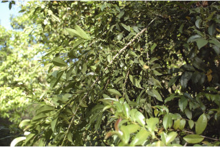
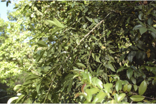

Images :
 



| Habit : | Small trees up to 5 m tall. |
| Leaves : | Leaves simple , alternate , distichous ; petiole 0.3-1 cm long, canaliculate , glabrous ; lamina 2.5-10 x 1.5-4 cm, elliptic to elliptic-oblanceolate , apex acuminate with retuse tip, base acute to cuneate , margin serrulate , glabrous , coriaceous , dark green and shining above, pale beneath; midrib slightly canaliculate above; secondary_nerves up to 8 pairs, impressed above; tertiary_nerves broadly reticulate . |
| Inflorescence / Flower : | N/A |
| Fruit and Seed : | N/A |